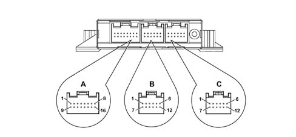

PARKING SENSOR NODE
- Path
- Descriptions > 55 ELECTRICAL EQUIPMENT > 5505 INSTRUMENT/GAUGE ELECTRICAL CIRCUITS > 5505A multi-function components > PARKING SENSOR NODE
- Kind
- system description
- Applies to
- all engines; all production periods
- Interactive page
- https://sloeber94.github.io/elrnDB-lThss/en/#/175144
Applies to: all engines; all production periods
SPECIFICATIONS
The Parking Sensor Node is located in the luggage compartment, on the left hand side.
The Parking Sensor Node provide the driver with distance information whilst approaching obstacles in front of or behind the vehicle.
These obstacles are detected by the eight parking sensors (four in the front bumper and four in the rear bumper).
OPERATION
The parking sensor node gives an auditory warning that an obstacle is close [F179]
For further details, see section [DF5505A].
The electronic control unit also carries out the following functions:
- selects and activates the sensors,
- processes the signals received by the sensors,
- controls the operation of the sensors,
- activates the front/rear speakers (via the CAN),
- manages the fault diagnosis and test functions.
The electronic control unit is equipped with the following electrical and electronic interface devices:
- protection against voltge fluctuations and short circuits,
- voltage stabilization for the microcomputer,
- electrical supply for the transducers,
- operation of the transducers,
- interface for the CAN,
- status LED operation.

Connector A PIN OUT
Pin | Function |
|---|---|
1 | Supply |
2 | Not connected |
3 | Not connected |
4 | Switch |
5 | Tow hook |
6 | Not connected |
7 | B-CAN Low |
8 | Earth |
9 | Not connected |
10 | Not connected |
11 | Not connected |
12 | Not connected |
13 | LED |
14 | B-CAN High |
15 | Not connected |
16 | Not connected |
Connector B PIN OUT
Pin | Function |
|---|---|
1 | Earth for front sensors |
2 | Supply for front sensors |
3 | Not connected |
4 | Not connected |
5 | Left outer front sensor signal |
6 | Left inner front sensor signal |
7 | Left inner front sensor signal |
8 | Left outer front sensor signal |
9 | Not connected |
10 | Not connected |
11 | Not connected |
12 | Not connected |
Connector C PIN OUT
Pin | Function |
|---|---|
1 | Right inner rear sensor earth |
2 | Right inner rear sensor signal |
3 | Left inner rear sensor signal |
4 | Right inner rear sensor signal |
5 | Left inner rear sensor signal |
6 | Right inner rear sensor supply |
7 | Left inner rear sensor earth |
8 | Right inner rear sensor earth |
9 | Left inner rear sensor earth |
10 | Left inner rear sensor supply |
11 | Right outer rear sensor supply |
12 | Left outer rear sensor supply |